01Overview概览
The MC Project (working title) is a first-person action MMORPG built on a Minecraft server: full-loot PvP zones, a player-driven economy and gear-defined classes in the tradition of Albion Online, with the dungeons, raid bosses and class roles of World of Warcraft. Two things separate it from a typical Minecraft server. Combat is per-bone: every hit is resolved against the target's skeleton, so where you hit matters. And the whole game is written down before it is built — 56 linked design pages that art, numbers and code all read from.
MC 项目（名称未定）是一款在 Minecraft 服务器上运行的第一人称动作 MMORPG：阿尔比恩式的全装备掉落 PVP 分区、玩家驱动的经济与「装备即职业」，加上魔兽世界式的副本、Boss 与职责分工。它和一般 Minecraft 服务器的区别有两点：战斗按骨骼判定，每一击都对着目标骨架结算，打在哪里是有区别的；整个游戏先写清楚再做，56 页互相引用的策划站是美术、数值和代码共同的依据。
Design pillars设计支柱
- Gear is your class — no character level. Weapons give Q / E / R, the off-hand gives F, armour pieces give T / Y / G; mastery lines level by use.装备即职业：没有角色等级。武器给 Q / E / R，副手给 F，防具给 T / Y / G；专精线靠使用升级。
- Where you hit matters — per-bone hit boxes with part multipliers and effect gauges: stun a head, disarm an arm, break a shield.打在哪里有区别：逐骨骼碰撞箱、部位倍率和积累条：打头眩晕、打臂卸力、打盾破盾。
- Risk is a map — four zone tiers (safe / contested / plunder / lawless) decide what you lose on death and what the land produces.风险画在地图上：四档分区（安全 / 纷争 / 掠夺 / 无法）决定死亡掉什么、土地产什么。
- Players make the economy — almost every item is player-crafted; regional markets do not connect; taxes are the gold sink.经济由玩家制造：几乎所有物品由玩家制造；地区集市互不连通；税费是金币回收口。
- Dungeons teach, bosses test — every wild-zone monster teaches one mechanic; each dungeon boss is the exam for that chapter.副本教学，Boss 验收：野外每种怪教一个机制，每本 Boss 就是该章的考卷。
Reference: Albion Online参考：阿尔比恩 Online
Albion Online is the structural reference — zone tiers, full loot, the regional order-book market, gear-based progression and open-world random dungeons. The pages below note where the design follows it and where it deliberately departs (first-person combat, body-part hits, WoW-style scripted dungeons).
《阿尔比恩 Online》是结构参考：分区、全掉落、地区挂单集市、装备成长和野外随机地牢。下面各页会标出哪些地方沿用它，哪些地方刻意不同（第一人称战斗、部位打击、魔兽式脚本副本）。
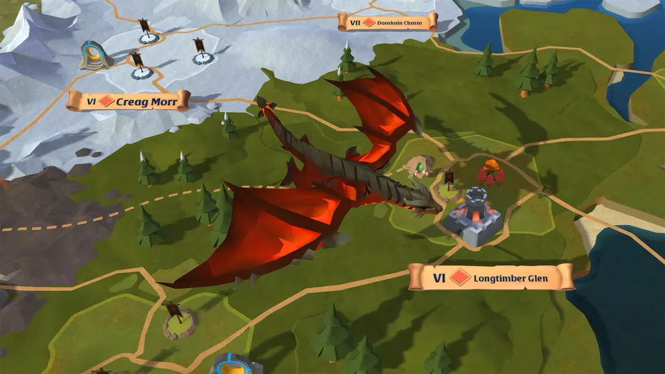
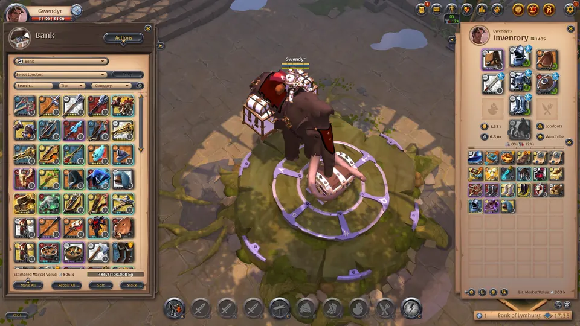
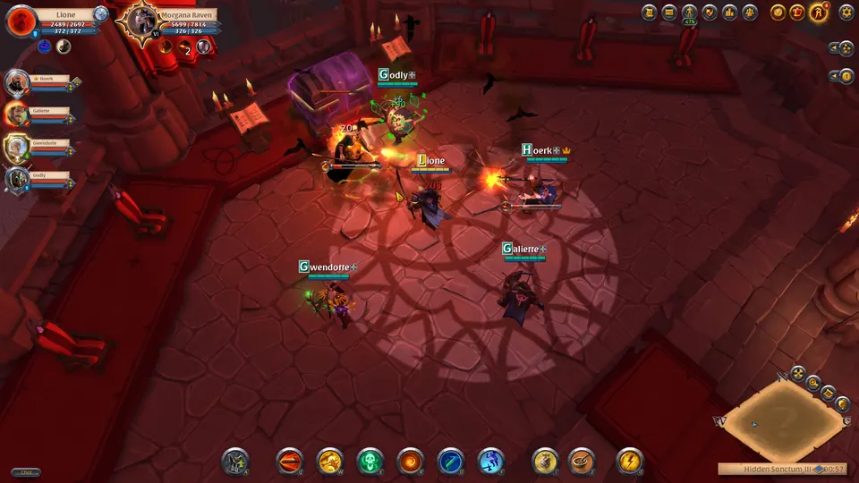
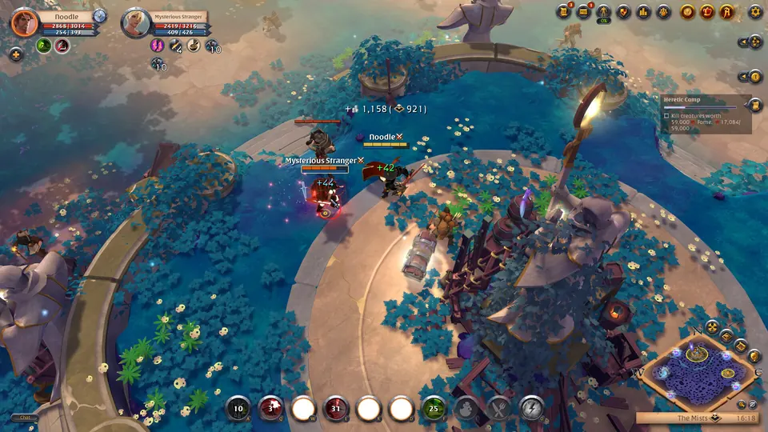
Albion Online screenshots © Sandbox Interactive GmbH, from the Steam store page; shown as design reference only.阿尔比恩截图 © Sandbox Interactive GmbH，来自 Steam 商店页，仅作设计参考。
What is playable today现在能玩到什么
02World世界
The world is one 10,000 × 10,000 pre-built terrain, Barggon, ringed by ocean so the sea is the border. Regions follow the terrain — mountains, rivers and coasts draw the zone lines — and each zone carries a safety tier and a tier range for monsters and resources.
世界是一张 10000 × 10000 的成品地形 Barggon，四面环海，海就是世界边界。分区顺着地形划：山脉、河流、海岸就是分区线，每个区带一个安全等级和一段怪物 / 资源 T 阶。
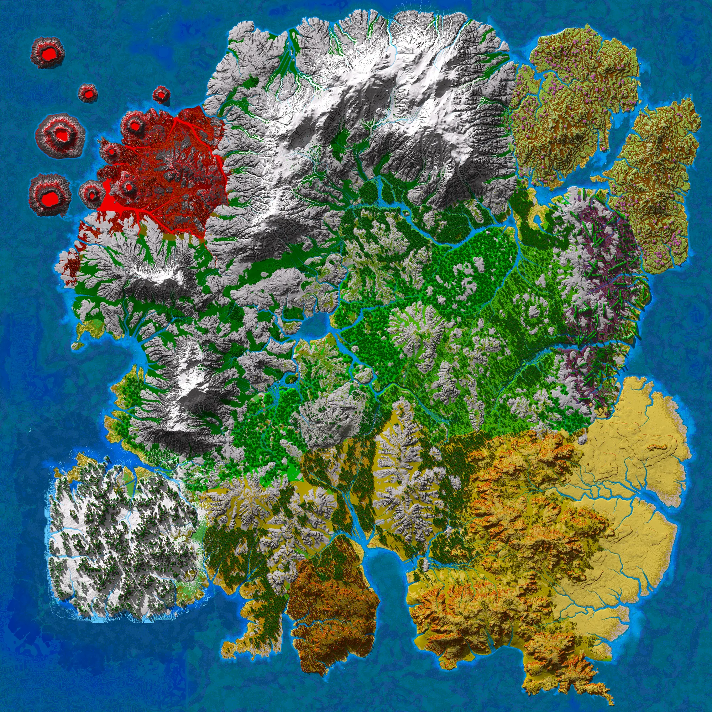
| Region区块 | Where位置 | Safety安全等级 | TierT 阶 | Outpost据点 |
|---|---|---|---|---|
| Kingdom Plains王域平原 | central-east plains and forest中东部平原与森林 | Safe (green)安全区（绿） | T1–T3 | the only full city唯一完整主城 |
| Eastern Blossom Isles东境樱林群岛 | north-east island chain东北岛链与东岸樱林 | Contested (yellow)纷争区（黄） | T3–T5 | harbour camp港口营地 |
| Barren Sands荒沙旷野 | south-east desert东南沙漠 | Contested (yellow)纷争区（黄） | T3–T5 | sand camp沙岸营地 |
| Red Rock Badlands赤岩恶地 | south-central plateau to SW coast中南部台地至西南沿海 | Contested (yellow)纷争区（黄） | T3–T5 | red rock camp赤岩营地 |
| North Slope Ridges北坡雪岭 | northern snow mountains北部雪山带 | Plunder (red)掠夺区（红） | T4–T7 | outpost北坡前哨 |
| Frozen Isle永冻雪岛 | south-west snow island西南雪林岛 | Plunder (red)掠夺区（红） | T4–T7 | outpost雪岛前哨 |
| Cataclysm Volcanoes灾厄火山群 | north-west volcanic belt西北火山地带 | Lawless (black)无法区（黑） | T6–T8 | guild hideout plots only仅公会驻地地块 |
| The Nether下界 | via volcanic rifts火山区裂隙进入 | Lawless (black)无法区（黑） | T7–T8 | — |
Version ladder版本抬梯
Launch opens the safe zone, the three contested zones and the Frozen Isle, capped at T5; the isle is the only source of T5 materials, so the highest risk holds the highest reward. Each later chapter opens a new top zone one tier higher and hands the old top tier down. Zone rules never change — only what the land produces moves.
开服开放安全区、三个纷争区和永冻雪岛，上限 T5；雪岛是 T5 材料的唯一产地，最高风险对应最高产出。之后每一章开一个高一阶的新顶端区，把旧顶端 T 阶下放。分区规则永不改，只有产出表在动。
| Version版本 | Chapter章节 | Opens启用 | CapT 上限 | Top zone顶端垄断区 |
|---|---|---|---|---|
| V1 | Ch. 1–2一、二章 | Kingdom + 3 contested + Frozen Isle王域 + 三线 + 永冻雪岛 | T5 | Frozen Isle雪岛 |
| V2 | Ch. 3 · North三章 · 北上 | + North Slope Ridges, D5+ 北坡雪岭、D5 | T6 | Ridges雪岭 |
| V3 | Ch. 4 · Volcano四章 · 火山 | + Volcanoes (lawless), raids+ 火山群（无法）、团队本 | T7 | Volcanoes火山 |
| V4 | Ch. 5 · Nether五章 · 下界 | + Nether rifts, final raid+ 下界裂隙、压轴团队本 | T8 | Nether下界 |
Travel传送网
- Free teleports inside the safe zone; cross-zone travel costs gold (a gold sink). Paid random teleport drops you at a safe wild point of a chosen contested zone.安全区内免费传送；跨区收路费（金币回收口）。付费随机传送落到所选纷争区的安全野外点。
- No teleport points in plunder or lawless zones: you walk or ride in, so interception stays possible.掠夺区和无法区没有传送点，只能步行或骑行进入，保留拦截的可能。
- New players below T2 travel free; a 60-minute "return to city" button works only outside combat and outside red/black zones.T2 以下新手全部免费；60 分钟冷却的「回主城」只在非战斗、非红黑区可用。
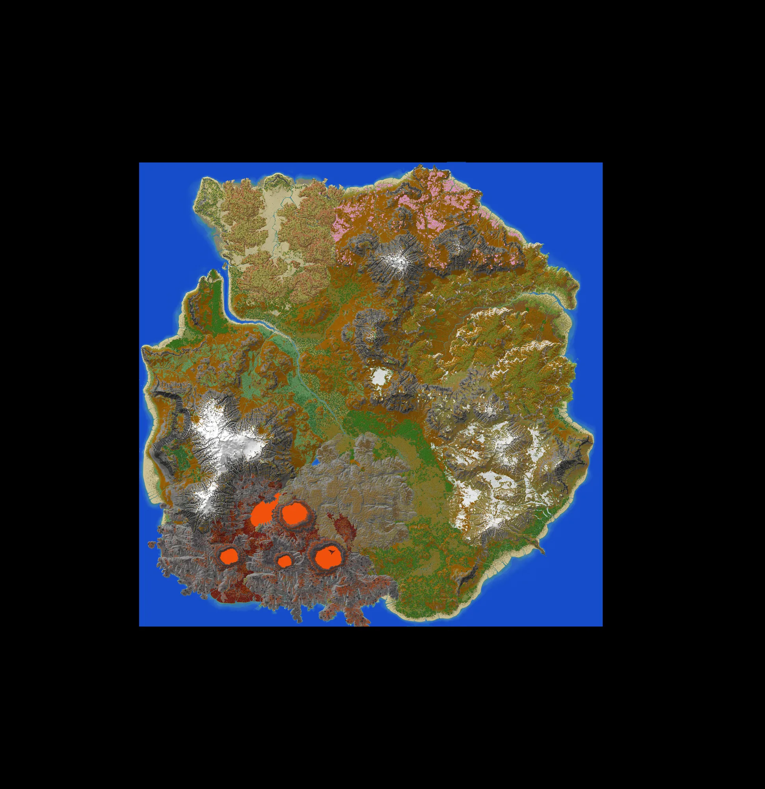
03Combat战斗
Seven skill keys, all granted by equipment. The main hand fills Q / E / R, the off-hand fills F, and hat, chest and boots fill T / Y / G; each slot offers several candidate skills and you activate one — the Albion item-spell model, moved into a first-person action game. Left click is the basic attack, right click uses the off-hand. A full set carries up to 7 active and 5 passive skills.
七个技能键，全部由装备提供。主手给 Q / E / R，副手给 F，帽子、胸甲、鞋子给 T / Y / G；每个占位有多个候选技能，选一个激活——阿尔比恩的物品技能模型，搬进第一人称动作游戏。左键普攻，右键用副手。满装最多 7 个主动 + 5 个被动。
Hit the part, not the box打部位，不打盒子
Vanilla Minecraft gives every entity one bounding box. Here each entity has per-part hit boxes bound to its pose; melee swings sweep a capsule from hand to blade tip along the weapon's keyframed arc, and the first part it touches is the part you hit. Each part carries a damage multiplier and an effect gauge: hits fill the gauge, the gauge triggers the effect, then the part is immune for a window and its threshold grows, so a long fight settles at roughly one trigger per eight hits.
原版 Minecraft 每个实体只有一个碰撞盒。这里每个实体有绑定姿势的部位碰撞箱；近战挥砍时，从手到刀尖的胶囊体沿武器关键帧轨迹扫掠，碰到的第一个部位就是命中部位。每个部位有伤害倍率和效果积累条：命中累积，积满触发效果，然后进入免疫窗并抬高阈值，长战斗大约每 8 击触发一次。
| Part (humanoid)部位（人形） | Multiplier倍率 | Effect效果 | Threshold阈值 | Result效果内容 | Immune免疫 |
|---|---|---|---|---|---|
| Head头 | 1.75× | stun眩晕 | 100 | 1.5 s stagger僵直 1.5 秒 | 12 s |
| Torso躯干 | 1.0× | — | — | — | — |
| Arm手臂 | 0.9× | disarm卸力 | 80 | −25% attack for 6 s攻击力 −25%，6 秒 | 10 s |
| Leg腿 | 0.8× | slow减速 | 80 | −30% speed for 4 s移速 −30%，4 秒 | 8 s |
Damage pipeline伤害结算管线
| Step步骤 | Formula公式 |
|---|---|
| ① Base① 基础伤害 | attack × skill multiplier; melee: attack × swing-segment multiplier × part multiplier; DoT ticks snapshot attack at application技能：攻击力 × 技能倍率；近战：攻击力 × 判定段倍率 × 部位倍率；DOT 每跳取施加时攻击力快照 |
| ② Defence② 防御减伤 | physical × 100 / (100 + armour); every other type × 100 / (100 + resist)物理 × 100 / (100 + 护甲)；其余类型 × 100 / (100 + 魔抗) |
| ③ Type③ 类型减免 | × (1 − target resistance to that type); negative values are weaknesses× (1 − 目标对该类型减免%)；负值即弱点 |
| ④ Status④ 状态增伤 | × (1 + bonus vs. that status) while the target has the status目标处于对应状态时 × (1 + 状态增伤合计%) |
| ⑤ Crit⑤ 爆击 | 5% base; × (150% + crit-damage affixes); DoTs and heals never crit基础 5%；× (150% + 爆伤词条)；DOT 与治疗不爆击 |
| PvPPVP | global ×1.0 coefficient kept as a live knob; part bonuses halved and part effects shortened against players全局系数 ×1.0 作为在线可调参数；对玩家部位加成减半、部位效果缩短 |
Ten damage types form a closed list — physical against armour, everything else against one resist stat. There is no true damage: a weakness is a negative resistance. Each type owns a colour and a shape so effects stay readable next to Minecraft terrain.
伤害类型是十种的闭口枚举：物理吃护甲，其余全部吃魔抗。没有真实伤害，弱点用负减免表达。每种类型有自己的颜色和形状，特效在 Minecraft 地形旁也能一眼分辨。
How it is implemented: TeaEngine实现：TeaEngine
TeaEngine is the team's own engine mod for the game — Fabric 1.21.1, Java 21 — and it owns combat end to end. Hit boxes are written into the model itself: a Blockbench group named _box:head is the head's collision box, so the artist who builds the model also defines what can be hit. The client sweeps those boxes frame by frame against the pose the player actually sees and reports which part it touched; the server checks the claim against a rest-pose envelope, the animation's contact window and range, and only then applies damage. The rule written into the design: the client measures, the server rules — and anti-cheat never costs game feel.
TeaEngine 是团队自研的游戏引擎模组（Fabric 1.21.1，Java 21），战斗从头到尾由它负责。碰撞盒直接写在模型里：Blockbench 里名为 _box:head 的组就是头部碰撞盒，做模型的美术同时定义了什么能被打到。客户端对玩家真正看到的姿势逐帧扫掠这些盒子，上报打到了哪个部位；服务端用静止位姿包络、动画的判定窗口和射程复核，通过才结算伤害。写进设计里的规则是：客户端量，服务端裁——反作弊不为它牺牲手感。
- Three layers, one authority — the Fabric server is the only game-logic authority and settles everything in memory within the tick; the client has zero authority; the Spring Boot backend owns persistent truth and cross-instance coordination and is never on a combat or movement call path.三层，一个权威：Fabric 服务端是唯一的游戏逻辑权威，tick 内内存结算；客户端零权威；Spring Boot 后端只管持久真相和跨实例协调，绝不出现在战斗或移动的调用链上。
- Skills are chains of atoms — a skill is a list of atoms with only two triggers, OnStart and OnSignal(name); wind-up and recovery are explicit Wait atoms, so new timings need no engine change. 18 atom types; the schema is validated at load and any error rejects the whole file rather than shipping a half-working skill.技能是原子链：一条技能就是一串原子，触发只有 OnStart 和 OnSignal(名字)，前后摇是显式的 Wait，加新时机不用改引擎。18 种原子；schema 在加载期校验，任一条不过整份不上，不让半套技能上线。
- Models straight from Blockbench — .bbmodel is converted to Bedrock geometry and animation and fed to a loader that has been validated in-game; one merged model is split into first- and third-person variants at pack time by tag, so artists maintain a single file.模型直接来自 Blockbench：.bbmodel 转成 Bedrock 几何和动画，喂给已实机验证的加载器；一份合并源模型在打包时按标签拆成第一 / 第三人称两份，美术只维护一个文件。
- Rig pose and root frame kept apart — the same clip is placed twice, once in camera space to draw and once at (eye position, facing) to judge; what you see is what is judged, with no separate reach knob.绑定位姿与 root 帧分离：同一份 clip 摆两次，一次在相机空间画，一次在（眼睛位置，朝向）判；看到的就是判定的，不留额外的 reach 旋钮。
- Debug is a first-class feature — a hit-box overlay shows the boxes appearing and vanishing mid-swing, the fastest way to check a contact window; per-part readouts print on hit.调试是正式功能：判定盒叠加层能看到盒子在挥击中途出现又消失，是确认判定窗口最快的办法；命中时打印部位读数。
client swing
├─ play clip (first- or third-person variant of the same model)
├─ each frame inside the contact window: sweep the weapon box against every _box:* group in reach
└─ hit → report { entity, part, tick, clip, frame }
server verify
├─ cooldown · one settlement per target per swing
├─ range and angle against the rest-pose envelope of that entity
├─ claim inside this clip's contact window?
└─ pass → damage pipeline (part multiplier → armour → type → status → crit)04Classes & Growth职业与成长
Classes are mastery lines named after what the weapon does, not a choice made at character creation. Seven lines are specified, four ship first. Each line is tuned on seven dimensions where 100% is baseline; the numbers are coefficients, so every later value — skill multipliers, ranges, cooldowns, control durations — derives from base × coefficient.
职业是按武器命名的专精线，不是建号时的选择。定了 7 条线，首批 4 条。每条线在 7 个维度上定档，100% 为基准；数字就是系数，之后所有数值（倍率、射程、冷却、控制时长）都按「基准 × 系数」推导。
| Line专精线 | Weapons武器 | Burst爆发 | Sustained持续 | Area范围 | Range射程 | Mobility机动 | Survival生存 | Control控制 | Batch批次 |
|---|---|---|---|---|---|---|---|---|---|
| Fire Mage火焰法师 | fire staff + off-hand火系法杖 + 副手 | 110% | 100% | 140% | 120% | 75% | 70% | 85% | 1 |
| Swordsman剑士 | one-hand sword + off-hand单手剑 + 副手 | 95% | 115% | 90% | 55% | 100% | 140% | 105% | 1 |
| Marksman神射手 | longbow (two-hand)长弓（双手） | 85% | 120% | 90% | 140% | 110% | 70% | 85% | 1 |
| Shadowblade影刺 | daggers + off-hand匕首 + 副手 | 145% | 115% | 65% | 70% | 140% | 75% | 90% | 1 |
| Arcane Mage奥术法师 | arcane staff奥术法杖 | 85% | 120% | 70% | 130% | 115% | 75% | 115% | 2 |
| Nature Monk自然修士 | nature staff自然法杖 | 55% | 130% | 95% | 110% | 85% | 115% | 70% | 2 |
| Hammer Warden锤卫 | hammer + off-hand锤杖 + 副手 | 70% | 90% | 95% | 55% | 85% | 145% | 145% | 2 |
Armour is free of the weapon line: cloth, leather and plate each come in three named sets tuned defend / neutral / attack, and mixing across materials is allowed. Recommended pairings are only the baseline the numbers were checked against.
防具不绑定武器线：布甲、皮甲、重甲各有三套命名套系，按守 / 中 / 攻定档，跨材质混穿也允许。推荐搭配只是数值验算的基准。
No character level: three growth axes没有角色等级：成长三轴
| Axis轴 | What it is是什么 | How it grows怎么涨 | What it decides决定什么 |
|---|---|---|---|
| Mastery line专精线 | one level track per weapon or armour type每种武器 / 防具一条等级线 | kill monsters while wielding or wearing it手持 / 穿着时击杀怪物 | what tier you may equip; talent slots at each rank可穿戴的 T 阶；每个称位一个天赋位 |
| Gear tier装备等阶 | T1–T8 on every item每件装备 T1–T8 | craft or loot higher tiers制造或掉落更高阶 | every stat — attack, armour, life all come from gear and affixes全部属性：攻击、护甲、生命都来自装备和词条 |
| Item power物品强度 | mean power of the six worn pieces六件位强度均值 | better tier and quality更高阶、更高品质 | quest and dungeon gates, matchmaking bands, every 100 = one band任务与副本门槛、匹配分段，每 100 一段 |
| Rank称位 | Level等级 | Unlocks解锁穿戴 | Bonus累计加成 | Talent天赋位 |
|---|---|---|---|---|
| Novice见习 | Lv1 | T2 | 0% | — |
| Apprentice学徒 | Lv4 | T3 | +1% | ① |
| Adept熟练 | Lv9 | T4 | +2% | ② |
| Expert专家 | Lv16 | T5 | +4% | ③ |
| Master大师 | Lv25 | T6 | +6% | ④ |
| Grandmaster宗师 | Lv36 | T7 | +8% | ⑤ |
| Elder长老 | Lv50 | — | +10% | — |
Talents are three-way choices per rank and are meant to change how a skill behaves, not add flat numbers; a single flat option is allowed only at Grandmaster and capped at 3%. They do not count toward item power, so gates and matchmaking never see them.
天赋每个称位三选一，以改变技能行为为主而不是加裸数值；裸数值选项只允许在宗师档出现一条，幅度 ≤3%。天赋不计入物品强度，门槛和匹配看不到它。
In game (test server, Sep 2026)游戏内（测试服，2026.09）
The item window follows the design page: quality, item power, slot, weight and mastery level up top; then one row per skill slot with the candidates, the active one gold-framed and the ones above the weapon's tier locked; then the affixes written on the template. The HUD shows life, mana and stamina, the hotbar with LMB / RMB / Q E R / T Y F G slots, and a live-scanned minimap.
物品窗按策划页做：顶部是品质、物品强度、槽位、重量和穿戴等级；然后每个技能占位一行候选，激活的金框，超过武器 T 阶的上锁；下面是写死在模板上的词条。HUD 有生命、法力、体力三条，带 LMB / RMB / Q E R / T Y F G 槽位的快捷栏，和实时扫描的小地图。
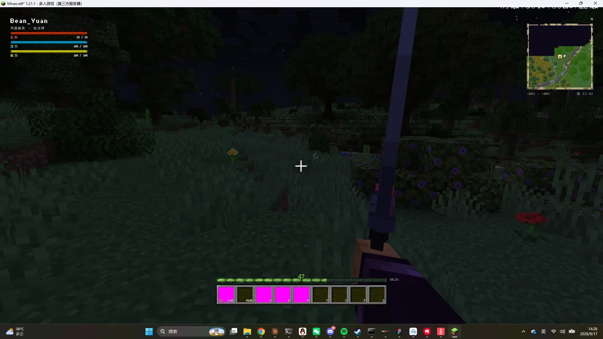
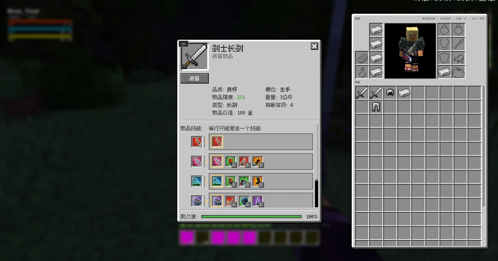
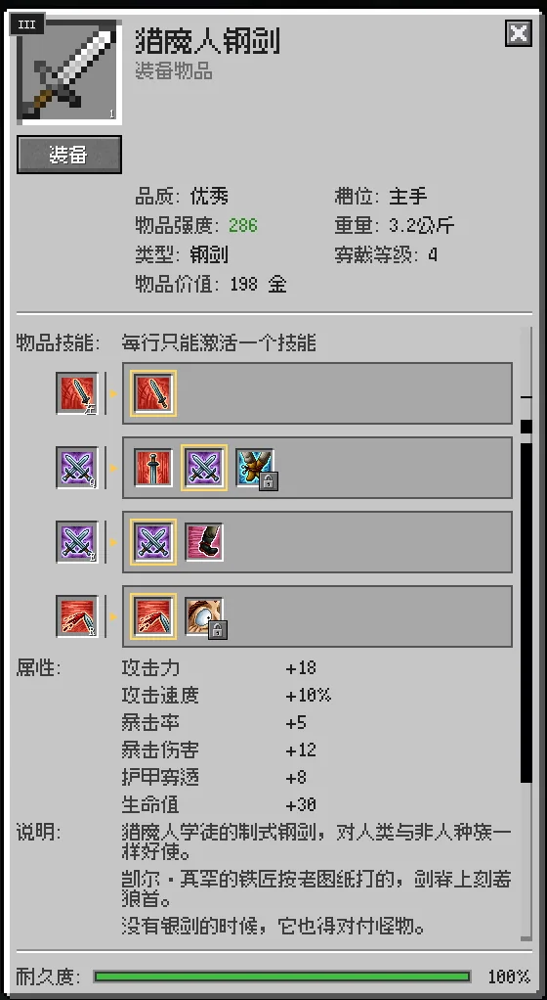
05Economy & PvP经济与 PVP
Four zone tiers, one death rule each四档分区，各一条死亡规则
| Zone地区 | PvPPVP | Killed by a player被玩家击杀 | Killed by a monster被怪击杀 | Yield产出 |
|---|---|---|---|---|
| Safe · green安全 · 绿 | duels only仅决斗 | — | −10% durability, respawn耐久 −10%，回复活点 | ×1 · T1–T3×1 · T1–T3 |
| Contested · yellow纷争 · 黄 | after raising the hostile flag; kills cost reputation开敌对标记后；击杀扣声望 | knocked down, nothing dropped, −10% durability击倒不死、不掉物品，耐久 −10% | −10% durability耐久 −10% | ×1.25 · T3–T5×1.25 · T3–T5 |
| Plunder · red掠夺 · 红 | hostile flag; reputation loss敌对标记；扣声望 | full loot; each item 30% destroyed on pickup全掉落；拾取时每件 30% 损毁 | full loot全掉落 | ×1.5 · T4–T7 · rare materials×1.5 · T4–T7 · 稀有材料 |
| Lawless · black无法 · 黑 | everyone, no flag, no penalty全员可打，无标记无惩罚 | full loot, 30% destroyed全掉落，30% 损毁 | full loot全掉落 | ×2 · T6–T8 · top materials only here×2 · T6–T8 · 顶级材料独占 |
- Hostile flag — a 3-second cast toggles it; flagged players are red-named server-wide. Anyone attacked may hit back for 60 seconds without flagging. Healing a red name makes you red.敌对标记：3 秒施法切换；开启后全服红名。被攻击者 60 秒内可直接还手不变红。给红名加血自己也变红。
- Reputation runs 0 to −1000 in five ranks; hitting someone two bands weaker triples the loss; kills of the innocent in plunder zones cost −100. Any rank can be worked back with kills, quests, gathering and crafting, capped at +100 a day — never with gold.声望 0 到 −1000 分五档；打低自己两段以上的人扣分 ×3；掠夺区杀无辜 −100。任何档都能靠杀怪、任务、采集、制造洗白，每日上限 +100，不能用金币买。
- Knock-down protection — for 10 minutes after being downed, that player and their party cannot hurt you unless you attack first; "return to spawn" is available while downed, so corpse-camping does not pay.击倒保护：被击倒后 10 分钟内，该玩家及其队伍打不到你，除非你先动手；倒地时随时可「返回复活点」，守尸没有收益。
- Duels anywhere including cities: 1v1, knock-down wins, no loot, no durability, no reputation change.决斗任何地区包括城市：1v1，击倒即胜，无掉落、无耐久损失、无声望变化。
Market集市
An order book in every region, and regions do not connect: to buy a region's goods you stand in that region. Equipment is a real SKU — same item id and quality means the same stats — so gear aggregates, trades and charts like any stackable. Fees are the gold sink.
每个地区一个挂单集市，地区之间不连通：要买哪个地区的货，人就得在那个地区。装备是真正的 SKU，同 ID 同品质属性完全一致，所以装备可以像堆叠物一样聚合挂单、求购、看走势图。手续费是金币回收口。
| Action操作 | Fill成交方式 | Fee费用 |
|---|---|---|
| Buy now即时购买 | takes the lowest ask吃最低卖单 | none无税 |
| Sell now即时出售 | hits the highest bid吃最高买单 | 8% tax8% 交易税 |
| Place ask挂卖单 | your price, wait自定价等买家 | 8% tax + 2.5% listing fee8% 税 + 2.5% 创建费 |
| Place bid挂买单 | your price, wait自定价等卖家 | 2.5% listing fee2.5% 创建费 |
Two keys to graduate毕业双钥匙
The T5 graduation set needs the D4 final boss's blueprint (do you know how to make it) and the Frozen Isle's exclusive material (do you have the stuff). The PvE dungeon road and the plunder-zone road need each other at the finish line; neither can be skipped.
T5 毕业装需要 D4 尾王的图纸（会不会造）和永冻雪岛的独占材料（有没有料）。PVE 副本线和掠夺区线在毕业点互相需要，谁也跳不过谁。
Guild hideouts公会驻地
- Plots exist only in plunder and lawless zones and are finite; a guild of level 4 may claim one and build on it with vanilla blocks.地块只在掠夺区和无法区，总量有限；公会 4 级可申请，用原版方块自由建造。
- 24-hour construction window when anyone can destroy it; afterwards invulnerable except during a self-chosen daily one-hour window, where attackers can break one of three stages per day. Unpaid upkeep drops the shield entirely.放置后 24 小时施工期任何人可拆；建成后常态无敌，只在自选的每日 1 小时脆弱窗口可被攻击，每天最多破 1 个阶段，共 3 阶段。欠维护费护盾全天失效。
- Destroyed hideouts return stored items by system mail; storage is never looted.驻地被毁后仓库物品走系统邮件寄回，不可被掠夺。
06Dungeon System副本体系
Dungeons follow the WoW pattern — waves, a mid-boss as the loudest beat, a final boss as the exam — inside an Albion-style economy where the 5-player dungeons carry blueprints and daily locks, and the random rifts carry unlocked farming.
副本走魔兽的结构：多波小怪、中途头目作为最响的一拍、终 Boss 作为验收；再放进阿尔比恩式经济里：5 人本带图纸和每日进度锁，随机裂隙负责无锁复刷。
| Type类型 | Players人数 | Map地图 | Roles职责 | Reset重置 | Yield / person每人产出 |
|---|---|---|---|---|---|
| Solo1 人本 | 1 | random rift, wild entrance随机裂隙 · 野外入口 | — | none无 | ×1.0 |
| Trio3 人本 | 1–3 | random rift, wild entrance随机裂隙 · 野外入口 | free自由组 | none无 | ×1.1 |
| Five5 人本 | 1–5 | fixed map, portal + matchmaking固定地图 · 传送门 + 匹配 | 1 tank · 1 healer · 3 dps1 坦 · 1 奶 · 3 输出 | daily 06:00每日 6:00 | ×1.3 |
| Raid团队本 | 10–20 | fixed map固定地图 | raid roles团队分工 | weekly每周一 | by table数值表定 |
Loot is per person and never rolled; more players means more yield, not a split. Entering over-geared cuts drops — one band over the gate halves them, two bands leaves only gold and mastery — so the current top dungeon stays the place to be.
掉落每人一份、不掷骰；人多产出更高而不是摊薄。超门槛递减：高 1 段掉落减半，高 2 段只给金币和专精经验，当前最高的本始终是该去的地方。
Roster总量盘子
| #编号 | Dungeon副本 | Type类型 | Zone · tier区域 · T 阶 | BossesBoss 编制 | Status状态 |
|---|---|---|---|---|---|
| D1 | Cataclysm Vanguard Camp灾厄先遣营 | 5-player5 人本 | Kingdom · T3王域 · T3 | Banner Officer → Vanguard Overseer灾厄旗官 → 先遣督战官 | detailed, in review细设待审 |
| D2 | Blossom Mist Altar樱雾祭坛 | 5-player5 人本 | Blossom Isles · T5樱林 · T5 | Mist Witch → Mist Illusionist雾汤大巫 → 雾祭幻师长 | detailed, in review细设待审 |
| D3 | Barren Beast Pens荒沙驯兽场 | 5-player5 人本 | Sands · T5荒沙 · T5 | Ironmane → Beastmaster铁鬃 → 兽栏总管 | detailed, in review细设待审 |
| D4 | Red Rock Butcher Pit赤岩屠夫矿坑 | 5-player5 人本 | Badlands · T5赤岩 · T5 | hidden Broodmother · Foreman → Butcher Lord蠹母（隐藏）· 屠夫工头 → 屠夫营主 | detailed, in review细设待审 |
| R1 | Cataclysm Rift灾厄裂隙 | solo / trio, procedural1 / 3 人本 · 随机 | by entrance · T3–T5按入口 · T3–T5 | elite and boss pools头目池 · 终 Boss 池 | detailed, in review细设待审 |
| D5 | Greyskull Sanctum灰颅圣坛 | 5-player5 人本 | Ridges · T6雪岭 · T6 | Soulbinder → High Priest + Warden (two targets)缚灵者 → 大祭司 + 缚械护卫（双目标） | V2V2 |
| D6 | Ember Throne熔烬王座 | raid团队本 | Volcanoes · T8火山 · T8 | Legion Commander灾厄军团长 | placeholder远期占位 |
| D7 | Rustgold Court锈金王庭 | raid团队本 | Nether · T8下界 · T8 | Rustgold Tyrant锈金暴君 | placeholder远期占位 |
Boss mechanic dictionaryBoss 机制词典
Every boss is assembled from a shared vocabulary plus one signature combination that no other boss repeats. Opposing constraints are stacked to force decisions: iron + share means you must group when you want to spread; ring + spread means the opposite.
每个 Boss 都从同一套词典取件，再加一个别的 Boss 不重复的招牌组合。用反向约束制造抉择：钢铁 + 分摊，想散必须聚；月环 + 分散，想聚必须散。
| Mechanic机制 | Shape形态 | Answer玩家应对 |
|---|---|---|
| Iron钢铁 | circle AoE centred on the boss以 Boss 为中心的圆形 AOE | move away远离 |
| Moon ring月环 | ring AoE, safe up close环形 AOE，贴身安全 | hug the boss贴近 |
| Mark单点 | AoE centred on a marked player点名玩家为中心的 AOE | spread; marked leaves the group分散，被点者离人群 |
| Share分摊 | one big hit split by everyone inside高伤 AOE，人越多越轻 | stack集合 |
| Execution死刑 | unavoidable heavy hit on top threat对一仇的高额必中 | tank cooldown坦克减伤 |
| Tower踩塔 | ground marker on a timer, one player soaks倒计时地标，一人踩 | assign a soaker指定人踩 |
| Eight ways八方 | one non-overlapping line per player每人一条不重叠直线 | everyone takes a direction各占方向 |
| Stepped AoE步进式 | waves advancing in a direction按方向推进的波次 | enter the gap在间隙进安全区 |
| Charge俯冲 / 冲锋 | straight-line hit with knockback直线高伤 + 击退 | side-step; steer into props侧闪；引导撞场景件 |
| Sequence序列穿层 | zones firing in order分区按顺序生效 | remember the order, cross into fired zones记序，穿入已生效区 |
| Phase机制阶段 | boss untargetable until a task is doneBoss 无敌，完成任务才能继续 | everyone to assignments全员转机制 |
Test dimensions per chapter逐本考验维度
| Dungeon本 | Basic attacks基础攻击 | Parts部位 | Interrupt打断 | Adds清杂 | Signature专属机制 | Burst check爆发 | Team团队 |
|---|---|---|---|---|---|---|---|
| D1 | ● | ● three intro lessons● 三课入门 | — | ● | — | ● light● 轻量 | — |
| D2 | ● | ● | ● | ● | ● bell truth-test● 樱铃辨伪 | — | — |
| D3 | ● | ● two-solution choice● 双解法决策 | — | ● | ● mount frenzy + moon ring● 组合怪暴走 + 月环 | — | — |
| D4 | ● | ● three lessons● 三课 | — | — | ● bloodlust mark + chains + iron / share● 嗜血标记 + 血槽钩链 + 钢铁 / 分摊 | ● | — |
| D5 | ● | ● pre-shred + chains● 预削 + 锁链 | ● | — | ● chains / purify● 锁链 / 净化 | ● | ● two targets● 双目标 |
Active skills beyond the basic attack climb one per dungeon — 2, 3, 4, 5, then 6+ for raids — and every new skill is pulled from an unused dictionary entry, so no two chapters teach the same thing.
普攻之外的主动技逐本加一：2、3、4、5，团队本 6+；每个新技能都从词典里未用过的件取，两章不会教同一件事。
BossesBoss 立绘
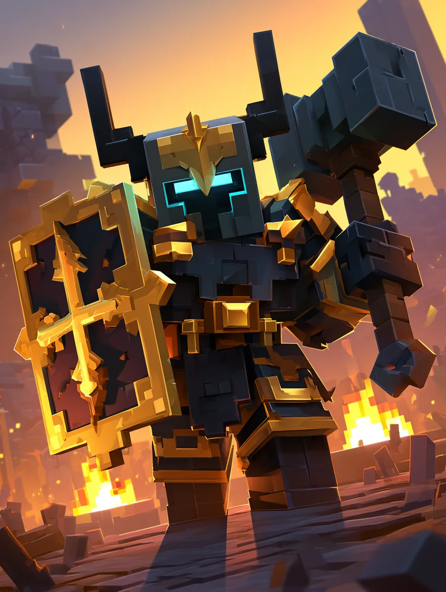
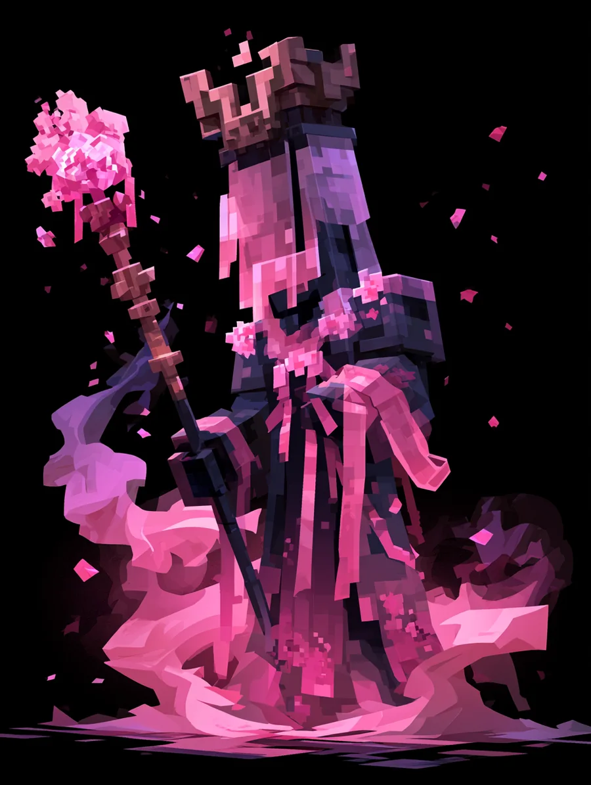
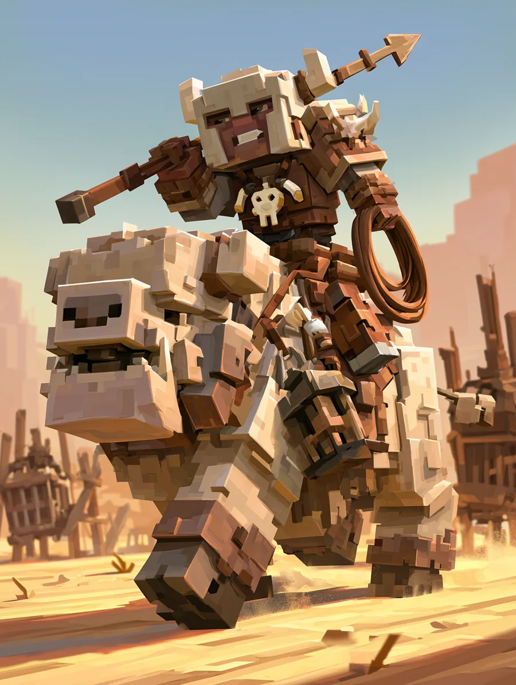
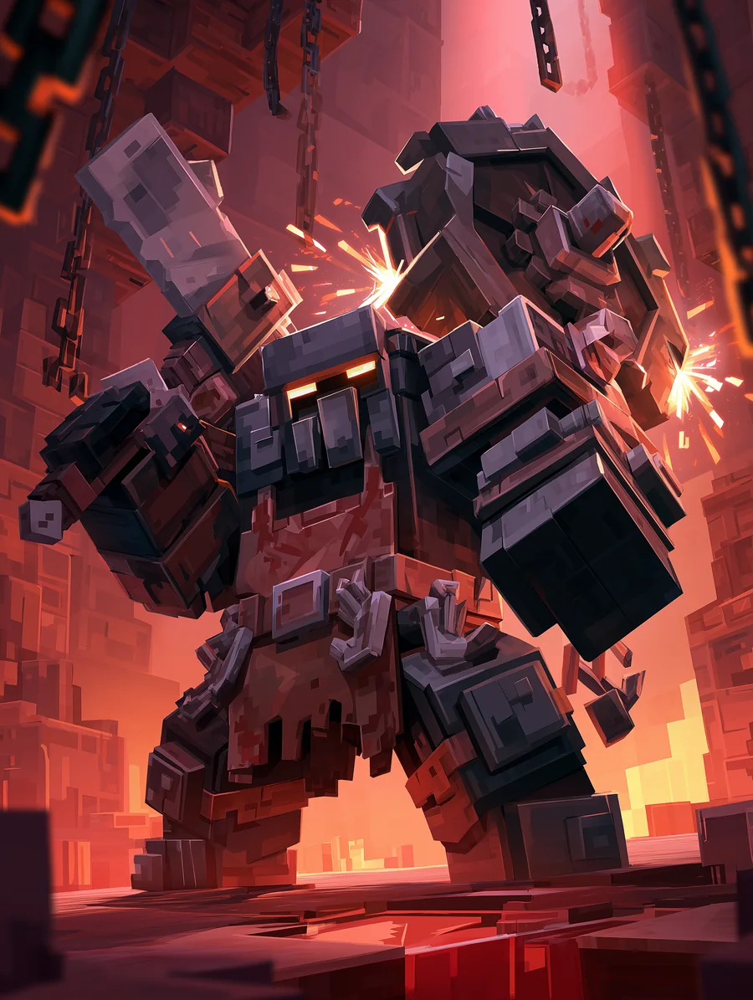
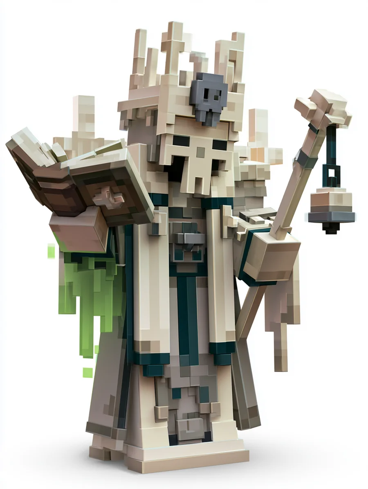
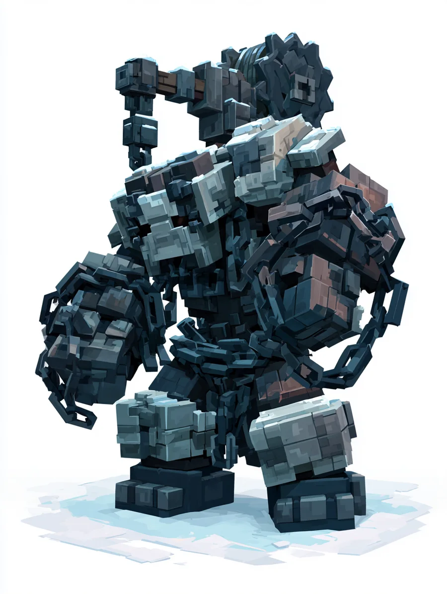
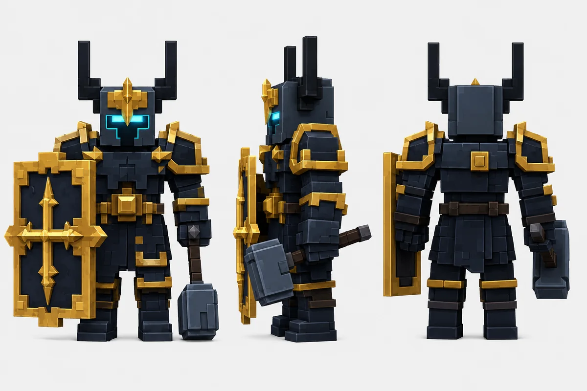
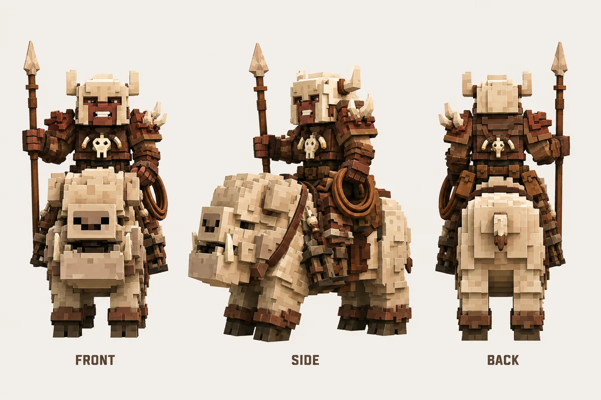
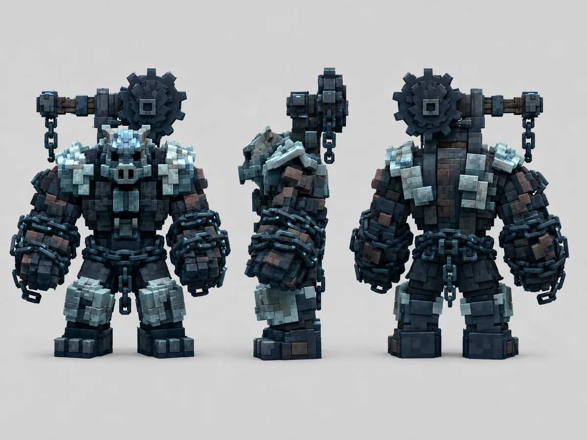
Boss concept art produced for the project in the blocky style of the game; turnarounds feed the Blockbench modelling pipeline.Boss 概念图按游戏的方块风格为项目制作；三视图直接进 Blockbench 建模管线。
07Level · D1关卡 · D1
D1, the Cataclysm Vanguard Camp, is the first 5-player dungeon and the exam for chapter one. The whole layout obeys one sentence: walk 270° around the sunken yard, then jump into it from above. A burnt army camp on a river-valley terrace, the main path runs about 170 blocks around three sides of the hollow, and the beacon banner at its centre is seen three times — from the broken bridge, through gaps in the yard fence, and from the overlook before the drop.
D1 灾厄先遣营是第一个 5 人本，也是第一章的验收本。整个布局服从一句话：绕着洼地校场转 270°，最后从高处跳进去。河谷台地上一座被焚毁的军营，主线约 170 格绕洼地三面，中央的烽火大纛全程亮相三次：断桥观景位、校场栅栏的框景缺口、跳落前的观景台。
Whitebox route map (drag to rotate, wheel to zoom)路线图 · 3D 白模（拖拽旋转 · 滚轮缩放）
Blue = main route · grey dashed = branches and the drawbridge return · orange = doors, traps and drop · red = enemies and boss · purple = chests · one unit = one block. Whitebox only; the build server takes this as the brief.蓝 = 主路线 · 灰虚线 = 支路与吊桥回程 · 橙 = 门、陷阱、跳落口 · 红 = 怪物与 Boss · 紫 = 宝箱 · 1 单位 = 1 格。仅为白模，编辑服以此为准施工。
Top-down plan with layers2D 俯视图 · 图层可开关
Segments and beats分段与节拍
Slow start → teaching fight → breather → optional ambush → low-pressure corridor → mid-boss (the loudest beat) → breather → final boss. Two fights of the same intensity are never adjacent.
慢启动 → 教学拍 → 呼吸间 → 可选伏击 → 低压走廊 → 头目（最响的一拍）→ 呼吸间 → 终 Boss。不连排两场同强度战斗。
Slow start: 30–60 s with no enemies. An uphill lane (+2) between burnt watchtowers ends at a broken bridge; the gap is 6 blocks and cannot be crossed, but from here the whole hollow and the beacon banner are visible. The goal is seen first, then the route bends away from it.
慢启动：前 30–60 秒无怪。焚毁哨塔之间的上坡窄道（+2）尽头是断桥观景位；缺口 6 格过不去，但从这里能看见整个洼地和烽火大纛。先看见目标，路线再绕开它。
A 14×14 fight field with two watchtowers flanking the gate. Two scouts on the towers, two raiders on the ground. Three covers of different heights: a fallen wall (blocks bolts fully), an overturned cart (half), a low fence (stops melee, not shots). A trigger line a third of the way in starts the whistle: until the first scout dies, a raider reinforces every 10 s from a side door already in view. The lesson is target priority; slow play adds enemies. Towers have ladders, and scouts jump down to melee once no ally is alive within 10 blocks, so an all-melee party is never stuck.
14×14 战斗场，两座哨塔夹门。塔顶斥候 ×2，地面劫掠兵 ×2。三种高度的掩体：塌墙（全挡弩线）、翻倒粮车（半掩）、矮栅栏（挡近战不挡射击）。场内 1/3 深处的触发线开始鸣哨：首只斥候死前每 10 秒从视野内的侧门增援一名劫掠兵。考点是集火优先级，拖慢就加怪。哨塔有梯子，10 格内无同伴时斥候会跳塔转近战，全近战队不会卡关。
No enemies: respawn B, a supply pile and torch light. To the east, a dim side pocket with rotten boards over a grain cellar. Step on them and you drop 2 blocks into an ambush of burrowers with a 1-second dig-out tell; the valuable chest is down there, and a ladder exits north into the corridor past the tripwire, so the branch loops back instead of backtracking.
无怪：复活点 B、补给堆、火把亮区。东侧一个留暗的口袋，烂木板下面是粮窖。踩塌坠入 2 格，遭遇刨土者伏击（破土前摇 1 秒）；贵重宝箱在窖内，北壁爬梯通到北廊绊线以南，支路环回主线，不走回头路。
Sixteen blocks with a ground line and a wall-top line side by side. The ground line has a tripwire that pulls two raiders from behind; the wall-top line has a sentry scout instead. Either choice costs something, and the lines merge before S3.
16 格，地面线和墙头线并行。地面线中段有绊线，踩了从后方追来两名劫掠兵；墙头线没有陷阱，但驻着一名墙头哨。两条线各有代价，在 S3 前汇流。
A 22×12 long yard for 12–20-block crossbow duels, with spike barricades along both sides and a raised training platform. The Banner Officer opens on the platform with three raiders. His charge can be steered into the spikes (self-stagger 2 s); his rally banner keeps calling reinforcements until someone chops it (6 hits); his banner arm is a part that can be disarmed. This is the operational peak of the dungeon: prop priority, trap reversal, part counters.
22×12 的长场，弩对射 12–20 格，南北两列尖刺拒马，北侧高 1 格训练台。灾厄旗官在训练台开场，带 3 名劫掠兵。冲锋可以引导撞拒马（自硬直 2 秒）；聚旗令的战旗持续召援，直到有人砍倒它（命中 6）；旗臂是可卸力的部位。这是全本操作峰值：物件优先级、陷阱反用、部位反制。
Two 2-block-wide switchbacks with no enemies, each corner opening a wall hole toward the hollow. The overlook shows the whole boss arena — boss position, braziers, oil trenches, the banner — before a 1.5-block one-way drop that starts the fight. No door-camping is possible.
两段 2 格宽的之字窄道，全程无怪，每个折角开一个望向洼地的墙洞。观景台上能看全 Boss 场：站位、火盆、火油沟、大纛；然后 1.5 格单向跳落，落地即开战。不存在门口蹲射。
A 16-block circular yard 1.5 blocks below the camp, the beacon banner at its centre, four braziers and two oil-trench segments on the edge. The west gate locks behind the drop so the boss cannot be kited into the corridor. When the Overseer dies the south drawbridge lowers across the trench straight back to the S0 hilltop — the broken bridge seen at the start closes the loop.
直径 16 格的圆形校场，低于营区 1.5 格，中央是烽火大纛，场边火盆 ×4、火油沟段 ×2。跳落后西闸落锁，Boss 拉不回走廊。督战官死亡后南侧吊桥放下，跨壕沟直回 S0 坡顶，开头看见的断桥在这里闭合。
Rules the level keeps关卡守的规则
- Doors gate progress; no full clears. Group 1 locks door 1, group 2 locks door 2.门控推进，不做全区清怪：组1 锁门1，组2 锁门2。
- Spawn triggers sit a third of the way into a room, never at the door; reinforcements enter from a side door the player has already seen — nothing spawns behind you.刷怪触发线放在场地 1/3 深处，不做门口刷怪；增援从已亮相的侧门进场，不背后刷。
- Every high perch has a melee answer. Doors are hard locks with no parkour bypass.高台怪都有近战解法。门是硬锁，不能跑酷绕过。
- Borders are terrain — slopes and river terraces — never invisible walls.边界全部是地形高差，不做空气墙。
- Guidance is worn dirt path, paired torches at correct doorways, supply piles every 15–25 blocks; wrong turns stay dark. No doorway you cannot reach, no stair with nothing at the top.导引靠踩秃的土径、正路门洞两侧的成对火把、每 15–25 格一处补给堆；错路留暗。不摆到不了的门洞，不摆上去没东西的楼梯。
Final boss: the Vanguard Overseer终 Boss：先遣督战官
A tower shield and a great hammer. The four intro dimensions — basic attacks, three part lessons, add clearing, a light burst check — are all pre-taught by the camp's own monsters, so the boss is the test, not the surprise.
塔盾加巨锤。四维入门：基础攻击、部位三课、清杂、轻量爆发，全部在前面的小怪身上预教过，Boss 是验收而不是意外。
| Part部位 | Effect效果 | Payoff收益 |
|---|---|---|
| Left arm · shield左臂 · 战地大盾 | break (once)部位破坏（一次性） | shield shatters: frontal reduction gone, charge mechanic gone for good大盾碎裂：正面减伤解除，蓄势机制永久关闭 |
| Right arm · hammer右臂 · 持锤臂 | disarm, 20 s immunity卸力，免疫窗 20 秒 | interrupts the Siege Hammer and removes it for two cycles; the summon timer pauses打断破城落锤并停用两轮；召唤计时暂停 |
| Head头 | stun, 25 s immunity眩晕，免疫窗 25 秒 | 2 s damage window, current action cancelled, charge stacks cleared2 秒输出窗，打断当前动作，清空蓄势层 |
Cycle: basic ×2 → combo → basic ×2 → Siege Hammer, about 13 s, with two raiders summoned through the drawbridge gap every 20 s. A landed Siege Hammer brings the next wave 5 s early; a Hammer that hits a brazier ignites the weapon for 10 s. At 30% the boss enrages (+30% damage, +20% speed) and needs only 3 stacks to charge. Healing budget: 60% tank chip, 15% hammer misses and oil-trench burns, 15% add fire, 10% margin.
循环：普攻 ×2 → 盾锤连击 → 普攻 ×2 → 破城落锤，约 13 秒；每 20 秒从吊桥门缝召唤两名劫掠兵。落锤命中则下一波提前 5 秒；砸中火盆锤面引燃 10 秒。30% 狂暴（伤害 +30%、攻速 +20%），蓄势只需 3 层。治疗压力预算：坦克磨血 60%、落锤失误与火油沟 15%、召唤散伤 15%、余量 10%。
Element placement sheet (for the build server)要素点摆点单（编辑服施工用）
| ## | Element要素 | Where位置 | Parameters参数 / 条件 |
|---|---|---|---|
| E1 | entry point入口点 | S0 west endS0 西端 | facing east朝东 |
| E3 | spawn · group 1怪物刷点 · 组1 | S1 tower tops ×2, gate ×2S1 哨塔顶 ×2 · 门前 ×2 | scouts ×2 + raiders ×2; scouts descend when no ally within 10 blocks斥候 ×2 + 劫掠兵 ×2；10 格内无同伴斥候下塔 |
| E4 | trigger T1触发器T1 | S1, one third inS1 场内 1/3 深处 | whistle: +1 raider / 10 s until first scout dies, cap 2, from west side door鸣哨：首只斥候死前每 10 秒 +1 劫掠兵，上限 2，自西侧侧门 |
| E5 | door 1门1 · 营门 | S1 / S2S1 / S2 之间 | opens when group 1 is dead击杀组1 全部 |
| E17 | trap · collapsing boards机关 · 塌陷板 | S2b cellar mouthS2b 粮窖口 | drop 2 blocks + 1 s slow; vanilla falling block坠入 2 格 + 迟缓 1 秒；MC 陷落方块 |
| E16 | trap · tripwire bell机关 · 绊线警铃 | north corridor, ground line北廊地面线中段 | 2 raiders chase from the S2 side door; jump or cut the rope劫掠兵 ×2 自 S2 侧门追来；跳过或攻击绳索解除 |
| E9 | mid-boss spawn头目战刷点 | S3 platform + ring of 3S3 训练台 + 中场环列 ×3 | Banner Officer + raiders ×3; banner = hittable prop, 6 hits旗官 + 劫掠兵 ×3；战旗 = 可击打部位物，命中 6 |
| E19 | trap · spikes机关 · 尖刺拒马 | S3 both sides, 6 setsS3 南北两列 ×6 组 | 40% attack + 0.5 s stagger on contact or knockback; breakable接触或被击退撞上 = 40% 攻击力 + 硬直 0.5 秒；可破坏 |
| E21 | drop跳落口 · 观景台 | zigzag end → S4 west西廊尽头 → S4 西缘 | 1.5 blocks, no fall damage, one-way; fires T3落差 1.5 格，无摔伤，单向；触发 T3 |
| E14 | trigger T3触发器T3 | S4 landing ringS4 跳落落点圈 | boss speech + west gate locksBoss 开场喊话 + 西闸落锁 |
| E15 | exit · drawbridge出口点 · 吊桥 | S4 south → S0 hilltopS4 南缺口 → S0 坡顶 | activates on boss deathBoss 死亡后激活 |
Twenty-six elements in total; the sheet plugs straight into the dungeon system's element table, so the level is data the build server places, not a hand-scripted map.
共 26 个要素，摆点单直接对接副本系统的要素表：关卡是编辑服按数据摆放的，不是手写脚本。
Heroic changes英雄档差异
- Group 1 gets a third scout on the gatehouse and reinforcement cap 2 → 4.组1 加第三只斥候在门楼上，增援上限 2 → 4。
- A second tripwire on the wall-top line, so both corridor lines carry a cost; the oil trench burns from the start of the boss fight.墙头线也加一道绊线，两条线都有代价；Boss 战开战火油沟即常燃。
- Mid-boss: 3 → 4 raiders, double charge, banner takes 10 hits. Boss: double hammer, banner-bearer add, larger healing budget.头目：劫掠兵 3 → 4，冲锋二连，战旗命中 6 → 10。Boss：落锤二连、旗手插入、预算上浮。
08Procedural · R1随机地牢 · R1
R1, the Cataclysm Rift, is the generated counterpart to the hand-built dungeons: every entry is a new map stitched from room templates by seed. Rifts open at random wild spots, are not on the map, and vanish if nobody enters within 30 minutes. A thin crack is a solo rift — one linear expedition; a wide maw is a trio rift — a 3×3 grid per floor with keystone doors, shortcuts and revisitable floors. The tier comes from the zone the entrance is in.
R1 灾厄裂隙是手工副本的生成版：每次进入都是按种子从房间模板拼出来的新地图。裂隙在野外随机位置出现、不上地图、30 分钟无人进入就消失。细缝是 1 人本，线型远征；巨口是 3 人本，每层九宫格，带钥石门、捷径和可回访的楼层。T 阶由入口所在区决定。
Ten hard constraints (linear mode)线型十条硬约束
| ## | Rule约束 | Reading口径 |
|---|---|---|
| G1 | Random main chain主链随机 | 6–9 rooms drawn by weight (combat 55%, breather / event 25%, long corridor 20%); one elite room in the back half; boss room always last. Sequences that fail G2–G10 are redrawn.主链 6–9 间按权重抽（战斗 55%、呼吸 / 事件 25%、走廊长件 20%）；精英房必出 1 且落在中后段；Boss 房必为末端。不合法的序列重抽。 |
| G2 | Opening lesson开局教学拍 | the first room after the entrance is a standard combat room at low strength (one fewer enemy).入口房后第一间必为标准战斗房低配组（−1 只）。 |
| G3 | Elite isolation精英房隔离 | at least one non-elite room on each side; a breather-type room between elite and boss.精英房前后各隔 ≥1 间非精英房；精英与 Boss 之间必有一间呼吸性质房。 |
| G4 | Fight cap连战上限 | no more than two combat rooms in a row.连续战斗房 ≤2。 |
| G5 | Treasure on branches宝藏挂支路 | treasure rooms hang off combat rooms at depth 1; 0–2 branches, 60% treasure / 40% event.宝藏房只挂支路（深度 1）；支路 0–2 条，宝藏 60% / 事件 40%。 |
| G6 | No repeats模板不重复 | a template is drawn once per run; corridor pieces may repeat but not adjacently.同一模板一次生成内不重复；走廊件可重复但同型不相邻。 |
| G7 | One-way drops only in the boss room单向跳落只在 Boss 房 | mid-run drops would lock branch returns.中途单向跳落会锁死支路回程。 |
| G8 | Level interfaces高差归零 | rooms absorb their own height changes; every door sits at y = 0.房间内部消化高差，所有接口地面高度 = 0。 |
| G9 | Branch loops支路回环 | 30% of branches rejoin the chain further on; looping branches carry an event, not treasure.支路 30% 概率回环汇入更后一间；回环支路放事件不放宝藏。 |
| G10 | Rotation and ports旋转 / 拓扑 | pieces rotate by 90°; 1 port = pocket, 2 = passage, 3 = T-junction (≤2 per map). Shape emerges from ports and rotation.拼接可 90° 旋转；口数 1 = 口袋、2 = 通道、3 = 丁字（每图 ≤2）。布局形状由口数与旋转自然涌现。 |
Structure and one seed生成结构与一个种子
Room library v1 · 28 templates房间模板库 v1 · 28 间
Rooms are designed for stitching, not cut from the fixed dungeons: one rift skin, every door 3 wide and 3 high at the centre of a wall, every floor at zero. Each fighting room states its lesson, and each has two encounter sets, solo and trio, on the same geometry.
房间专为拼接设计，不是固定副本的碎片：统一裂隙皮肤，门口一律 3 宽 3 高开在墙正中，地面一律为零。每间战斗房写明考点，同一几何配 1 人档和 3 人档两套遭遇。
| IdID | Room房间 | Size尺寸 | Ports口数 | Trio encounter3 人档遭遇 | Lesson考点 |
|---|---|---|---|---|---|
| ri01 | Rift entry裂隙入口室 | 10×8 | 1 | none; respawn, supplies, tier stone无怪；复活点、补给、石碑 | safe lead-in安全导入 |
| rb01 | Cracked-rock cross hall裂岩十字厅 | 14×14 | 3 | raiders ×4 + scouts ×3, two waves劫掠兵 ×4 + 斥候 ×3，两批 | mixed range, break line of sight on the pillar远近混编 · 借柱断线 |
| rb03 | Rift bridge裂谷栈桥 | 18×4 | 2 | vindicators ×5 + weavers ×2; falling teleports you back, costs time not life卫道士 ×5 + 织者 ×2；坠落传回桥头，损时不损血 | narrow footing, light truth-test窄道站位 · 辨伪轻版 |
| rb06 | Two-storey gallery双层回廊厅 | 12×12 | 2–3 | archers ×3 above, raiders ×4 below弓手 ×3（上）+ 劫掠兵 ×4（下） | take the high ground高打低 · 夺高台 |
| rb07 | Spike alley尖刺窄巷 | 3–4 wide S3–4 宽 S 形 | 2 | hounds ×5 + raiders ×2血斑屠犬 ×5 + 劫掠兵 ×2 | trap reversal against rushers拒马反用 · 冲脸应对 |
| rr01 | Rift spring裂隙泉室 | 8×8 | 2 | none; activates the single mid-run respawn无怪；激活全裂隙唯一中途复活点 | breather + save呼吸 + 存档 |
| rt01 | Crevice vault岩缝密室 | 8×6 | 1 (branch)1（支路） | valuable chest + burrower ambush ×7贵重箱 + 刨土者伏击 ×7 | risk for reward风险换奖励 |
| re01 | Banner hall军旗厅 | 16×12 | 2 | Banner Officer + raiders ×3; barricades, side door旗官 + 劫掠 ×3；拒马、增援侧门 | elite pool精英房对 |
| rx01 | Rift drill yard裂隙校场 | φ16 | drop 1.5跳落 1.5 | Overseer (rift tier); braziers ×4, oil trenches ×2督战官（裂隙档）；火盆 ×4 + 火油沟 ×2 | boss poolBoss 房对 |
| rk01 | Keystone shrine钥石祭室 | 8×8 | 2 | guard fight → keystone守卫战 → 取钥石 | grid target cell网格目标格 |
Full library: 1 entry, 8 combat, 2 breather, 2 treasure, 4 event, 5 elite pairs bound to their mid-bosses, 4 boss pairs with drop entries, 2 grid-only rooms. Zero new models: every prop, trap and monster is reused from the fixed dungeons, and event props are vanilla blocks.
全库：入口 1、战斗 8、呼吸 2、宝藏 2、事件 4、与头目绑定的精英房对 5、带跳落入场的 Boss 房对 4、网格专用 2。零新增模型：场景件、陷阱、怪物全部复用固定副本，事件道具用 MC 原生件。
From template to blocks从模板到方块
Rooms are authored as ASCII layers in a text file the generator reads directly: # stone brick, O blackstone pillar, x cover, _ void, A respawn anchor. Adding a room means adding a block of text; rooms without a template fall back to an auto-boxed shell.
房间用 ASCII 分层写在文本文件里，生成器直接读：# 石砖、O 黑石柱、x 掩体、_ 虚空、A 重生锚。加一间房就是加一段文本；没有模板的房间退回自动糊盒子。
room rb01 size 14 14 # 裂岩十字厅:中央岩柱 + 四象掩体。三个门(-X / +X / +Z),是支路的挂点房。 # 考点是"远近混编 · 借柱断线",所以柱子要真能挡住视线 —— 通到顶。 layer 1 ################ #..............# #..xx......xx..# #..xx......xx..# #..............# #.....OOOO.....# ......OOOO...... ......OOOO...... #.....OOOO.....# #..............# #..xx......xx..# #..xx......xx..# #..............# #..............# #..............# #######....##### layer 2 ################ #..............# #..xx......xx..# #..xx......xx..# #..............# #.....OOOO.....# ......OOOO...... ......OOOO...... #.....OOOO.....# #..............# #..xx......xx..# #..xx......xx..# #..............# #..............# #..............# #######....##### layer 3 ################ #..............# #..............# #..............# #..............# #.....OOOO.....# #.....OOOO.....# #.....OOOO.....# #.....OOOO.....# #..............# #..............# #..............# #..............# #..............# #..............# ################ end
The rift generator builds the layout, validates reachability, retries the seed three times on failure and falls back to a default layout; instances come from a world pool so entry does not stall the server.
裂隙生成器拼布局、校验连通性，失败换种子重试 3 次后回退默认布局；实例来自世界池，进入不卡服。
Rewards奖励与经济挂钩
- A new currency, rift shards, drops per cleared room, elite and boss, with a soft daily cap and an NPC exchange for material packs and cosmetics.新通货裂隙残晶：清房、精英、通关各掉一档，每日软上限，NPC 兑换材料包和外观。
- Per-person value per run (solo, T3 / T4 / T5): treasure 264 / 370 / 512, elite 139 / 194 / 269, boss 257 / 360 / 499 gold; trio about double. No blueprints — those stay in the 5-player dungeons.每人一份价值（1 人本，T3 / T4 / T5）：宝藏 264 / 370 / 512、精英 139 / 194 / 269、终 Boss 257 / 360 / 499 金；3 人本约两倍。不掉图纸，图纸只在 5 人本。
- Rifts have no lockout: they are the repeatable farm; 5-player dungeons are the daily progression.裂隙无进度锁，是可重复的 farm；5 人本负责每日进度。
09Pipeline & Management管线与项目管理
Engine and stack引擎与技术栈
| Layer层 | What内容 | Why原因 |
|---|---|---|
| Game server游戏服 | Fabric 1.21.1 mod (server module) — the only logic authorityFabric 1.21.1 模组（server 模块），唯一逻辑权威 | every result a tick needs is computed in memory; a local damage roll is microseconds, an RPC is millisecondstick 内要的结果全在内存里算；本地算一次伤害是微秒，RPC 是毫秒 |
| Client客户端 | Fabric mod (client module): rendering, HUD, hit sweeps, camera, world UIFabric 模组（client 模块）：渲染、HUD、命中扫掠、相机、世界 UI | zero authority; measures and reports零权威，只量和报 |
| Backend后端 | Spring Boot 4 · PostgreSQL 18 · Redis · FlywaySpring Boot 4 · PostgreSQL 18 · Redis · Flyway | persistent truth and cross-instance coordination; session ownership tokens stop item duplication across instances持久真相与跨实例协调；会话所有权令牌防跨实例刷物品 |
| Shared共享 | common (atoms, formulas, stat sheets, model parsing — no Minecraft dependency) and uikit (pure-Java flex layout engine)common（原子、公式、属性表、模型解析，零 MC 依赖）和 uikit（纯 Java 弹性布局引擎） | the backend includes both builds, so validation and UI layout run the same code on both sides后端复合构建同一份，校验和界面排版两边跑同一实现 |
| Editor编辑站 | web editor with embedded Blockbench and Snowstorm, Figma import, save-to-game hot reload网页编辑站，内嵌 Blockbench 与 Snowstorm，Figma 导入，保存即推到游戏 | no restart, no resource-pack rebuild, no F6不重启、不重打资源包、不按 F6 |
| Ops运维 | Docker Compose (postgres / redis / backend / mc), GitHub Actions build-and-deploy, rsync layered mountsDocker Compose（postgres / redis / backend / mc），GitHub Actions 构建即部署，rsync 分层挂载 | a one-line HTML change no longer re-uploads 72 MB改一行 HTML 不再重传 72 MB |
Working rules written into the engine写进引擎的工作规则
- Validate, then apply — a config hot reload checks every entry first and abandons the whole reload on a single failure, because a half-applied config is worse than no reload.先校验后应用：配置热重载先检查每一条，任一条不过整次放弃，半套配置上线比不重载更糟。
- Property sheet is the single base-value source — MythicMobs was rejected because its own stats file would fight it; ArcartX was rejected because both patch the same HUD class with exclusive redirects.属性表是唯一的基础值来源：MythicMobs 因自带属性文件与此冲突被排除；ArcartX 因和引擎在同一个 HUD 类上用独占的 Redirect 被排除。
- Write the wrong turns down — the roadmap keeps a section of repeated mistakes (default values where the asset already states the truth; deriving coordinate conventions instead of adding a toggle and flipping it in game) so the next person does not repeat them.把走错的路写下来：路线图里专门有一节反复踩的坑（资产里写明了真值却给默认值；靠推导坐标约定而不是加个开关在游戏里切几下），下一个人不再重踩。
Design site as the source of truth策划站是唯一依据
Fifty-six linked pages: system specs, the numbers table, config tables, level pages and the art requirement board, plus 78 cross-role sync sheets between numbers, config, systems, art and code. Configuration tables read live values from the numbers table, so changing a base value updates every derived item. The numbers, item and skill definitions live in the backend database that the game reads.
56 页互相引用：系统策划、数值表、配置表、关卡页和美术需求板，加上 78 份数值 ↔ 配置 ↔ 系统 ↔ 美术 ↔ 开发的跨岗位同步单。配置表实时读数值表，改一个基准值整页派生数值跟着变。数值、物品和技能定义存在游戏读取的后端数据库里。
Project management: the design site is also the tracker项目管理：策划站同时是追踪板
The same site that holds the specs runs the project. A requirement board splits work into development and art, and every requirement lists the exact files it is delivered as — drop a file on its row and it is delivered. An asset library receives those files for acceptance (accepted or returned), a schedule turns dated requirements into a Gantt chart, a concept board holds references, and a milestone page merges code commits with art deliveries into one timeline.
放策划案的站点同时在管项目。需求板分开发和美术两块，每条需求下面列出它要交付的具体文件，把文件拖到那一行就算交付。资产库验收这些文件（入库或打回），排期把填了日期的需求变成甘特图，概念图板放参考，项目里程碑把代码提交和美术交付合成一条时间线。
- Trading交易系统
- Items道具系统
- Gathering & crafting采集与制造系统
- Combat战斗系统
- Classes职业系统
- Loot掉落系统
- 17 more…还有 17 页…
- Numbers table数值表
- World structure世界结构
- Monsters怪物配置表
- Dungeons副本配置表
- Gathering materials采集材料配置表
- Weapons & armour武器装备配置表
- Consumables消耗品配置表
- wpn_mace_t5.bbmodelaccepted入库
- wpn_mace_t4.bbmodelaccepted入库
- wpn_mace_t3.bbmodelaccepted入库
- wpn_dagger_dual_t5.bbmodelaccepted入库
- wpn_dagger_dual_t4.bbmodelaccepted入库
- wpn_bow_t5.bbmodelaccepted入库
| # | File文件名 | Note说明 | Reference参考 | Delivery交付 | Status状态 |
|---|---|---|---|---|---|
| 1 | wpn_sword_t1 | T1 (model + icon)（模型 + ICON） | 2 refs2 张参考 | wpn_sword_t1.bbmodel ✓ | done已完成 |
| 2 | wpn_sword_t2 | T2 (model + icon)（模型 + ICON） | + | wpn_sword_t2.bbmodel ✓ | done已完成 |
| 3 | wpn_sword_t3 | T3 (model + icon)（模型 + ICON） | + | wpn_sword_t3.bbmodel ✓ | done已完成 |
| 4 | wpn_sword_t4 | T4 (model + icon)（模型 + ICON） | + | wpn_sword_t4.bbmodel ✓ | done已完成 |
| 5 | wpn_sword_t5 | T5 (model + icon)（模型 + ICON） | + | wpn_sword_t5.bbmodel ✓ | done已完成 |
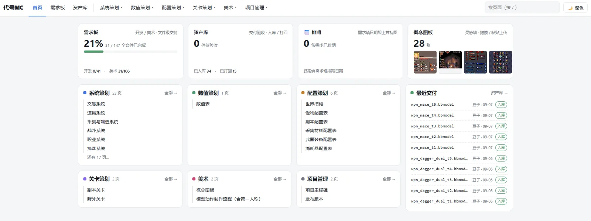
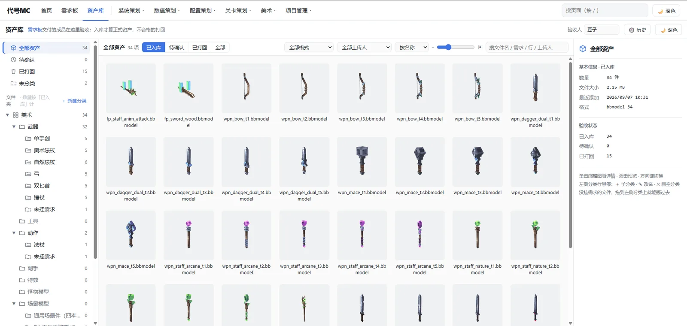
Recreated from the live site (17 Sep 2026); numbers are the real board state that day. The site runs on the same backend as the game, so the requirement board, asset acceptance and the game’s item and skill data share one database.按 2026 年 9 月 17 日的线上站点重绘，数字是当天的真实板面。站点和游戏跑在同一个后端上，需求板、资产验收和游戏里的物品、技能数据共用一个数据库。
What runs today现在跑得通的
- Per-part hit detection in first and third person on the test server, with the hit-box overlay and part readouts used to tune contact windows.测试服上第一、第三人称的部位判定，用判定盒叠加层和部位读数调判定窗口。
- The Swordsman line: 12 skills and 6 states on a longsword configured from the class table; slot-based keys (Q / E / R main hand, F off-hand, T / Y / G armour) with per-slot candidate choice stored on the item.剑士线：一把按职业表配置的长剑，12 技能、6 状态；按槽位的键位（主手 Q / E / R、副手 F、防具 T / Y / G），每槽候选选择存在物品上。
- Vanilla-style HUD rebuilt from scratch: health, mana, stamina, hotbar, region banner, a live-scanned minimap with Xaero-accurate colours, world-space quest markers and screen-edge direction arrows.从零重做的原版风格 HUD：血量、法力、体力、快捷栏、地区提示、实时扫描的小地图（对齐 Xaero 配色）、世界内任务标记和屏幕边缘方向箭头。
- Item card and inventory modelled on the design pages (Minecraft × Albion layout); rich tooltips filled from templates sent on join and on hot reload.按策划页做的物品卡和背包（Minecraft × 阿尔比恩布局）；进服和热重载时下发模板，富提示按模板拼装。
- Blockbench camera animations play in game; one merged model splits into first- and third-person variants at pack time.Blockbench 的镜头动画在游戏里播放；一份合并源模型打包时拆成第一、第三人称两份。
Next下一步
- State → comparison operators → target filters → selection atoms → branching → affix atoms, in that order, because State underpins the other four and touches no damage code.State → 比较运算符 → Targets 筛选 → 选择原子 → Branch → 词条原子，按这个顺序，因为 State 是后四个的地基且不碰伤害管线。
- Third-person aiming: report the aim point and validate angle and range on the server.第三人称瞄准：上报瞄准点，服务端校验夹角和射程。
- Build D1 on the edit server from the placement sheet; author the remaining rift room templates.按摆点单在编辑服搭 D1；补齐其余裂隙房间模板。
Timeline时间线
| When时间 | What内容 |
|---|---|
| May 20262026.05 | "Rift Continent" planning site: pitch, 15 system pages, 8-week MVP plan「裂界大陆」策划站：立项、15 个系统页、8 周 MVP 计划 |
| Jun – Jul 20262026.06 – 07 | Design site v2: system specs, numbers table, config tables策划站二代：系统策划、数值表、配置表 |
| Aug 20262026.08 | Technical route fixed (pure Fabric + external backend); TeaEngine repository starts Aug 20; skill atoms, model pipeline, per-part hits; boss art; D1–D5 level pages技术路线定案（纯 Fabric + 外置后端）；TeaEngine 仓库 08.20 起；技能原子、模型管线、部位判定；Boss 立绘；D1–D5 关卡页 |
| Sep 20262026.09 | HUD, minimap and inventory; Swordsman line on the test server; web editor with hot reload and Figma import; R1 room library; D1 layout v2HUD、小地图与背包；剑士线上测试服；带热更新和 Figma 导入的编辑站；R1 房间库；D1 布局 v2 |